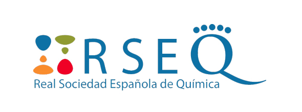

Durant la seva carrera científica, ha treballat en el disseny computacional d’enzims importants per a les seves possibles aplicacions en medicina. Ha participat en 7 projectes de recerca, ha estat convidada a impartir diversos seminaris i ha participat en més de 40 conferències, en 3 de les quals com a ponent convidada. El Dr. Osuna és autor de 50 publicacions en revistes internacionals revisades per parells. Les seves publicacions acumulen més de 860 cites.
Col·labora amb molts grups ubicats als Estats Units i a Europa, sent els més rellevants per al desenvolupament d’aquest projecte .
Ha obtingut els següents premis:
- Premi 2016 a Joves Investigadors per part de la Real Sociedad Española de Química
- Premi Princesa de Girona d'Investigació 2016